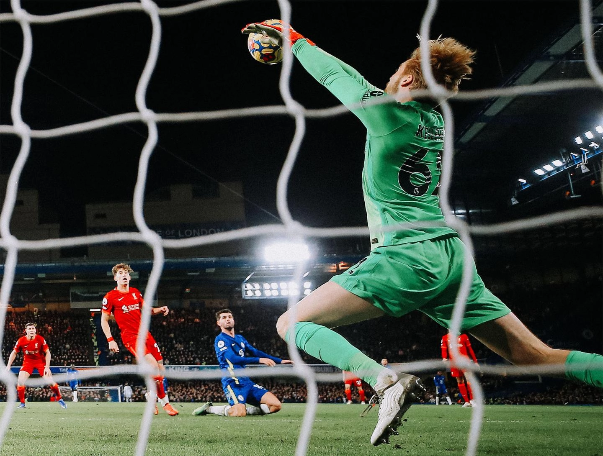

Jordan Henderson wants Liverpool to use the positives from Sunday’s 2-2 draw with Chelsea to make improvements at the next opportunity.
The Reds were denied three points at Stamford Bridge in a thrilling Premier League battle that they led by two goals in the early stages, courtesy of Sadio Mane and Mohamed Salah strikes by the 26th minute. Mateo Kovacic lashed in a volley and Christian Pulisic slotted home an equaliser in a double blow before half-time, though, and nothing could then separate the sides in the second period as both goalkeepers produced vital saves. “We’ll be disappointed with the goals we conceded,” Henderson told Liverpoolfc.com post-match. “Of course the first one is an outstanding finish but the lead-up to it we were disappointed with and then conceding so quickly on the second one, we’ll be disappointed with that also. “But then we get in at half-time and I thought the lads came out and gave it everything. Chelsea are always going to create chances here, but I thought we defended and showed great spirit to keep going and keep digging in when the crowd was up. “On another day we could have scored another one on the counter-attack, we had a couple of good chances, the ’keeper made some brilliant saves for them. So, in the end I think we’ve got to take the point and move on because it is a tough place to come. “Of course, if you look at the league we would have liked to have taken the three points to try to get closer to [Manchester] City but, unfortunately, under the circumstances we couldn’t do that today.” A run of three Premier League encounters without a win means Liverpool now trail leaders Manchester City by 11 points with a game in hand. The captain was pleased by the response the Reds showed versus Chelsea following the disappointment of defeat at Leicester City, however, and insisted the team will not give up their pursuit at the summit. “We were disappointed with the last game against Leicester,” said Henderson. “Overall, we weren’t at the races really and we can play a lot, lot better. If we do that then I think we get the three points, so that was a big disappointment. “But I think we showed a reaction today to keep going, keep digging in when things aren’t going our way – to just try to keep going – and we ended up getting a point. “So, like I said, still some positives to take forwards, still a lot of football to play from now until the end of the season. We’ll just give it absolutely everything when we get on the pitch.”
He continued: “We know how strong City are, Chelsea are, the whole of the Premier League – it’s a tough league, some very good teams, so you can’t get focused on anything else but yourself. “We just need to focus on what we need to do in every game that we play and everybody in the squad needs to be ready to play over this next period over the next few weeks, especially without [Naby Keita, Mane and Salah, who now head to the Africa Cup of Nations]. “That’s football, you dig in, you keep going as a squad and hopefully we get our rewards come the end of the season.” The Reds were without manager Jürgen Klopp plus Alisson Becker, Roberto Firmino and Joel Matip on Sunday as they isolate following suspected positive COVID-19 test results. Caoimhin Kelleher was one of those to come into the starting XI, replacing Alisson, and Henderson praised the goalkeeper for his latest impressive performance when called upon. “I thought he was outstanding,” said the skipper. “Not only his saves, but showing personality on the ball, playing out, being calm, his distribution was good. “But he has been every time he has come in, so it doesn’t really surprise us, but I thought he was a big plus for us today – he was outstanding.”
Read the full article on Liverpools official page!